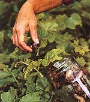
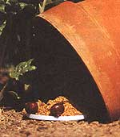
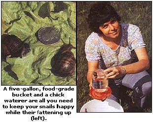

GARDEN & YARD
Turn the tables on those annoying backyard pests.
After years of battling snails in my garden while cooking up escargots purchased at a premium from a local import shop, I finally got wise. As long as I was gathering garden snails, why not harvest them for dinner? One bite told me I was onto something: those fresh snails from my garden, though smaller, tasted far superior to the pricey escargots from cans.
This revelation came to me back in the days when most folks didn't want to know that snails and escargots are one and the same. When I served garden snails to my friends, their invariable reaction was "yuk!" But when those same friends thought they were eating escargots from France, I got rave reviews. Since then, our American appetite for continental cuisine has created an ever-growing market for escargots. At the same time, ecological awareness encourages creative approaches to ridding our yards and gardens of plant predators. What could be more creative than turning the tables on garden pests while, quite literally, putting meat on the table at virtually no expense? Those creatures once considered a garden plague are now being avidly sought for their slightly chewy texture and subtle, earthy flavor.
Helix And Cepaea
The common garden snail, Helix aspersa, is a close relative of France's commercially harvested Helix pomatia. Both can be found on French dinner plates, where the former goes by the affectionate "petit gris" (little gray) to distinguish it from its cousin gros blanc (large white). No one can say for certain how the French mollusk managed to cross the ocean into North America. Some folks claim that a mid-1800s French immigrant, craving this epicurean delight, imported snails and turned them loose to proliferate in a central California orchard. Others believe Helix came as a stowaway in grapevine cuttings brought by the Spanish missionaries who established the now famous California vineyards.
Whatever the case, Helix now ravages orchards and gardens throughout Western and Southern coastal areas. While it is the best known of the edible snails, plenty of others are suitable for harvesting. Second in gourmet popularity is Cepaea, which ranges from the maritime provides of Canada to as far south as Tennessee. Known as the grove or garden snail, Cepaea can be identified by its prettily banded shell. Although few snails rival the flavors of Helix and Cepaea, any land snail large enough and abundant enough to gather is a potential candidate for the table.
Lure Them With Bran
French cooks believe snails gathered in the fall are tastiest, but gardeners who collect them in spring (when snail damage is greatest) find little difference in flavor. Because snails are basically nocturnal, the most productive harvesting times are nightfall and early morning, when the yard is still damp with dew. Snails will also crawl out of their hiding places after a light rain or after the garden has been watered.
To harvest many snails at once, lure them to a gathering spot by taking advantage of their passion for bran. Leave a handful under an overturned, propped-up flower pot and the critters will come flocking. After they've gorged on bran, they'll attach themselves to the inside of the pot and you can peel them off by the handful. If snails are munching on your fruit trees, band the trees with strips of copper. The snails won't crawl over the bands, but will congregate at the base of each tree for easy picking.
Check with your local wildlife or extension agent first, because some tree snails are endangered and the law prohibits collection of threatened species. If your appetite for snails exceeds the supply in your garden, you should have no trouble convincing neighbors to let you round up theirs. Avoid areas where potentially toxic substances have been sprayed. Don't worry about snail bait, though. Once a snail consumes bait, it won't survive long enough to be harvested.
Heliculture And Snail Housing
Once you've harvested your snails, you will need a place to house them until they're ready to be cooked up. The inner portion of a bait pail makes a dandy snail farm, and so does a plastic five-gallon, food-grade bucket with numerous small holes drilled into it for ventilation. Because a snail can lift five times its own weight, you'll need a tight-fitting lid to keep the little Samsons from organizing an escape. Although one bucket can house up to 500 snails, housekeeping is easier if you gather only as many as you need for one meal-allowing six per serving (double if the snails are small).
Throw in a few extra to compensate for normal losses. Between batches, clean the bucket thoroughly. To avoid premature cooking, keep your snails out of the sun. Suitable sites include cool basements, airy garages, or any place where the temperature falls between 55°F and 75°F. Because you have no idea what your snails have been munching on that could taste unpleasant to you (or be toxic),
allow a 10-day cleansing period before your own feast. The French disdain escargots fed with anything but grape leaves, but snails do fine on plain lettuce. Some folks pre-season them by feeding them herbs. Others plump up snails with cornmeal or bran and high-protein soymeal.
Like any livestock, snails need water. A saucer full is sufficient, if you fill it frequently. Better yet is a narrow-mouth mayonnaise or canning jar fitted with a vacuum-controlled base, of the sort used to water baby chicks. The plastic base costs about a dollar and can be found at most feed stores. For pre-marinated mollusks, take a tip from the Romans and fill the jar with wine instead of water.
Believe it or not, insects are
finding their way onto the finest American tables. Preparation And De-sliming
Three days before feast day, withhold food but not water (or wine) to let the snails finish digesting their last meal. At the end of this fasting period, rinse snails thoroughly in cool water and discard any that don't peek out of their shells. To deslime: Cover the snails with water combined with two tablespoons of salt and one tablespoon of vinegar per dozen snails. Soak the snails until they release all their slime, which takes about four hours. To speed things up, change the solution several times. Rinse the snails well, cover them with water (some cooks add a splash of lemon juice here),
bring the water to a boil, and simmer 10 minutes. Cool the snails and remove the meat from the shells. Garden snails often have thin shells that shatter easily, making it difficult to follow the traditional practice of returning them to their own shells for baking. You can strengthen the shells during the 10-day feeding period by supplying a calcium supplement, such as crushed oyster shell of the sort fed to laying hens for the same reason. Alternatively, discard the shells in favor of reusable gros blanc shells,
sold by import shops as coquilles. Because coquilles are often larger than the shells your snails came in, stuff each one with two snails. (To save the coquilles for reuse, wash them in soapy water. Cover them with fresh water to which a pinch of baking soda has been added, bring the water to a boil, rinse the shells, and drain them dry before storing.) To remove fragile shells from your garden snails, crush the shells between your fingers and peel away the shards. Extract the contents of sturdier shells with a nut pick or seafood fork. As you remove each snail from its shell, peel the skin from the meat and cut away the black portion at the end of the tail.
(If you have plenty of extras, freeze them for later use, although they'll suffer a slight loss in texture.) When you're ready for final preparation, cover the meat with water flavored with your favorite bouquet garnis, or add a bay leaf and a little parsley, thyme, onion, garlic, and a few peppercorns. Slosh in some cognac or substitute white wine for half of the water. Bring the water just to a boil and simmer the snails for three to four hours, depending on their size. While the meat cools in the broth, prepare herb butter. Allow one cube of butter (no margarine here, please) for each two dozen snails. With each cube, cream two tablespoons chopped parsley, one table spoon chopped chives, two crushed cloves of garlic, one-quarter teaspoon salt, and freshly ground pepper to taste.
The Great Payoff
Some cooks find it convenient to both bake snails and serve them in the same grooved platters, but it's far more elegant to heat them in a baking pan and transfer them to clean, preheated platters. When you use a baking pan, pack the snails closely so they won't roll around, or line the pan with crumpled foil shaped into a series of depressions to hold each shell in place. Pour a spoonful of broth or press a bit of herb butter into each shell, stuff in one snail (two if they're small), and pack the opening with herb butter. Then the snails may be wrapped tightly and stored in the refrigerator for several hours or overnight. Preparing them ahead of time will give them a chance to absorb extra herb flavor.
When you're ready to serve them, pop the baking pan into a 425°F oven for 10 minutes or until the butter begins to bubble. Escargots are traditionally served with specially shaped tongs to grasp shells and narrow, close-tined forks. Fondue forks work fine, too. Don't use the fork to put the snail into your mouth-that's uncouth. Instead, place the snail on a bit of French bread, pour broth and butter from the shell onto the bread, and pop it into your mouth. If you don't care for all this protocol, don't give up yet. Snails are closely related to clams and oysters, and may be prepared in many of the same ways.
You might, for example, remove the cooled snails from their broth, pat them dry, and sauté them in butter flavored with shallots, garlic, and a dash of nutmeg. Or dip them in batter and deep fry. For appetizers, fill sauteed mushroom caps with one or two boiled snails, top with herb butter, and broil. Snails are traditionally served as an appetizer or first course, but they also make a terrific summery entrée served with a fresh-picked garden salad tossed with oil and vinegar. Add a loaf of crusty French bread and a bottle of white or young red wine, and bon appetit!
A Word on Insect Cuisine
Believe it or not, insects are finding their way onto the best American tables. To satisfy a growing demand for information, in 1988 the University of Wisconsin began publishing The Food Insects Newsletter. According to entomologist and editor Gene DeFoliart,
cultural bias is the only thing stopping more Americans from enjoying insect cuisine. He sees the outlook changing, though, due in part to a need to meet the world's burgeoning food requirements and in part to an increasing concern about the environment and the overuse of pesticides. Collecting insects as food for humans is the ultimate form of biological pest control, says DeFoliart, and an enterprise that's made to order for low-input, smallfarm production.
Among his newsletter's many subscribers are organic gardeners seeking information on dealing with the likes of grasshoppers, ants, and grubs. "You have created an efficient grasshopper predator," wrote one enthusiastic subscriber after consuming her first meal of grasshoppers, which she described as being creamy and mildly sweet. (If you're thinking of trying grasshoppers yourself, DeFoliart suggests you avoid bright-colored ones.)
To date, the only guide (I know of) for preparing the creepy, crawly things found in your yard is Entertaining with Insects, the cookbook used by the chefs who prepared last summer's much acclaimed New York Bug Banquet at the tony Explorer's Club. The collection includes such delights as Beetle Bars, Honey Bee Soufflé, Insect Quiche, and Cricket-on-the-Hearth Bread.
Here, from the book, is Patricia H. Howell's winning entry in a California Earthworm Recipe Contest:
Earthworm Patties
1 1/2 lbs. ground earthworms (Place live worms in flour for 24 hours to purify, boil for 10 minutes, then grind.)
1/2 cup butter, melted
1 teaspoon lemon rind, grated
11/2 teaspoons salt
1/2 teaspoon white pepper
2 tablespoons soda water
1 egg, beaten 1 cup dry bread crumbs
2 tablespoons butter
1 cup sour cream
Combine earthworms, melted butter, lemon rind, salt, and pepper. Stir in soda water. Shape into patties and dip in beaten egg, then in bread crumbs. Place in heated butter and cook for 10 minutes, turning once. Place patties on hot serving dish. Serve with heated sour cream on top.
Note. To receive three issues per year of The Food Insects Newsletter, write Department of Entomology, 545 Russell Laboratories, University of Wisconsin, Madison, WI 53706. A $5 donation is appreciated to help defray costs.
|
 Harvest snails in the early morning. |
 You can do this by luring snails with some bran placed beneath a tipped- over flower pot. |
 |
|
|
|
|